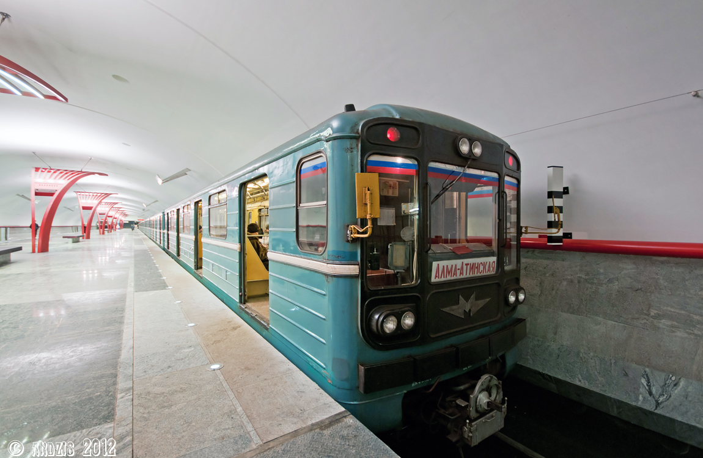
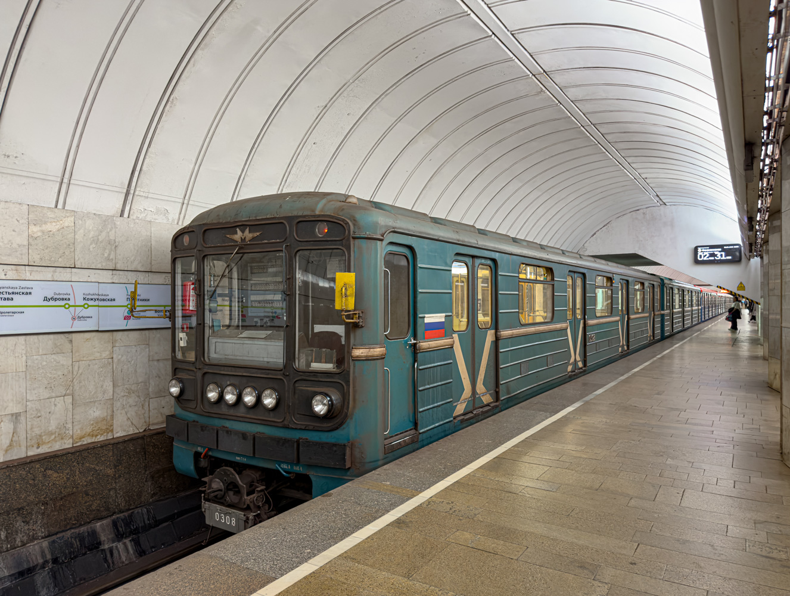

Вагоны 81-717.5/714.5
81-717.5 (головной) и 81-714.5 (промежуточный) — модификация вагонов 81-717/714, выпускавшаяся с 1988 года. Это самая массовая серия «номерных»: более 4300 вагонов, которые работают почти во всех метрополитенах России и СНГ.
Главное внешнее отличие от базовой модели — две фары над лобовым стеклом кабины. В 1993 году на смену пришла модификация 81-717.5М/714.5М с обновлённой кабиной и пультом машиниста.
Производство
Модификация .5 появилась в 1988 году, когда изменений в конструкции базовых 81-717/714 накопилось слишком много. Для различия модернизированных вагонов от более ранних были введены новые обозначения.
| Параметр | Значение |
|---|---|
| Годы постройки | 1988—1995 (базовая .5); 1993—2010 (.5М) |
| Страна постройки | СССР / Россия |
| Заводы | Мытищинский машиностроительный (ММЗ/МВМ), Ленинградский вагоностроительный (ЛВЗ) |
| Вагонов построено | 199 Мг / 552 Мп (81-717.5/714.5) |
| Всего «номерных» всех модификаций | 7409 вагонов |
Важно: Модификации .1—.4 поставлялись в страны Восточной Европы. .5 и .5М — для СССР/СНГ. Также существовали .5Б (Баку), .5К (Киев), .5П (Петербург), .5Н (Новосибирск).
Технические характеристики
| Параметр | Значение |
|---|---|
| Род тока и напряжение | 750 В постоянного тока |
| Типы вагонов | Мг (81-717.5) / Мп (81-714.5) |
| Число вагонов в составе | 3—8 |
| Количество дверей | 2×4 |
| Полная вместимость | 309 (81-717) / 330 (81-714) |
| Сидячих мест | 42 / 48 |
| Длина вагона | 19 206 мм |
| Ширина | 2 670 мм |
| Высота | 3 650 мм |
| Диаметр колёс | 780 мм |
| Ширина колеи | 1 520 мм |
| Масса тары | 34 / 33,5 т |
| Материал вагона | Сталь |
| Тип ТЭД | ДК-117Д |
| Мощность ТЭД | 4 × 114 кВт = 456 кВт |
| Макс. скорость | 90 км/ч |
| Макс. служебная скорость | 80 км/ч |
| Ускорение при пуске | 1,2 м/с² |
| Ускорение при торможении | 1,1 м/с² |
| Электрическое торможение | Реостатное |
| Система тяги | Реостатно-контакторная |
| Тормозная система | Пневматическая системы Вестингауза, электрическая |
| Системы безопасности | АЛС-АРС, ПА-КСД, ПУАВ, ПА-М |
Ключевые отличия от базовой модели
💡 Две фары над стеклом
Главное внешнее отличие 81-717.5 от 81-717 — две фары, расположенные над лобовым стеклом кабины.
⚙️ Модернизированное оборудование
Обновлённое электрооборудование и схема вагона. Все изменения были систематизированы и получили обозначение «.5».
🚪 Двери и вентиляция
Восемь пассажирских дверей (2×4). Две системы вентиляции: естественная приточно-вытяжная и принудительная механическая.
🔧 Моторный промежуточный
Все вагоны — моторные, все оси ведущие. Головные 81-717.5 устанавливаются по концам состава для челночной эксплуатации.
История
Начало выпуска базовой модели
Мытищинский машиностроительный завод начал выпуск вагонов 81-717/714 — первых серийных вагонов с кабиной без торцевой двери.
Подключение ЛВЗ
Ленинградский вагоностроительный завод им. И. Е. Егорова также начал выпуск «номерных».
Появление модификации .5
Изменений в конструкции накопилось так много, что потребовалось новое обозначение. Вагоны стали называться 81-717.5 и 81-714.5.
Переход на .5М
Мытищинский завод начал выпуск модификации 81-717.5М/714.5М с новой кабиной, пультом машиниста и оформлением салона.
Активные поставки
Вагоны .5М активно поставлялись в Москву (ТЧ-1 «Северное», ТЧ-15), а также в Минск, Киев, Баку и другие города.
Завершение поставок в Москву
Последние вагоны .5М были переданы Москве. Столица перешла на закупку более современного подвижного состава.
Поставки в Киев
Метровагонмаш поставил в Киев 40 вагонов 81-717.5М/714.5М пятивагонными составами.
Модификации
81-717.5 / 714.5
Базовая модификация .5 (1988—1995). Две фары над лобовым стеклом. 199 Мг / 552 Мп.
81-717.5М / 714.5М
Модернизированная версия (1993—2010). Новая кабина, пульт машиниста, оформление салона. Приточно-вытяжная вентиляция заменена на принудительную, установлен электрический привод дверей.
81-717.5Б / 714.5Б
Специальная комплектация для Бакинского метрополитена. Поставлялись в 2002—2011 годах.
81-717.5П / 714.5П
Для Петербургского метрополитена (ОЭВРЗ).
81-717.5К / 714.5К
Для Киевского метрополитена.
81-717.5Н / 714.5Н
Для Новосибирского метрополитена.
Эксплуатирующие города
Вагоны 81-717.5/714.5 и их модификации работают почти во всех метрополитенах России и СНГ (кроме Казани и Днепропетровска).
| Город | Модификация | Примечание |
|---|---|---|
| Москва | .5, .5М | ТЧ-1 «Северное», ТЧ-2 «Сокол», ТЧ-15 «Печатники», ТЧ-17 «Южное», ТЧ-19 «Лихоборы» |
| Санкт-Петербург | .5, .5П | ТЧ-3 «Московское», ТЧ-6 «Выборгское», ТЧ-7 «Южное» |
| Новосибирск | .5, .5М, .5Н | Поставки 2006—2008 гг. |
| Екатеринбург | .5, .5М | — |
| Киев | .5, .5М, .5К | Поставки 2007—2013 гг. |
| Минск | .5, .5М | Поставки 2009—2010 гг. |
| Баку | .5Б | Поставки 2006—2007 гг. |
| Харьков | .5 | Поставки 1989—1991 гг. |
| Ташкент | .5 | — |
Уникальные модели
Опытный вагон 81-717.5 № 0129
Этот вагон стал опытной площадкой для обкатки решений, которые позже пошли в серию 81-717.5. Уникальный экземпляр ранней модификации.
Последний московский с фарами 2-2-2
Последний вагон 81-717.5 (ММЗ/МВМ), выпущенный для Москвы, сохранивший оригинальную схему фар 2-2-2 (две фары сверху, две по центру, две снизу).
Фотогалерея

📸 andzis

📸 quantomic
Нажмите на фото для увеличения
«81-717.5 — это самая массовая модификация „номерных“. Если вы были в метро любого крупного города постсоветского пространства, вы почти наверняка ехали именно в таком вагоне».